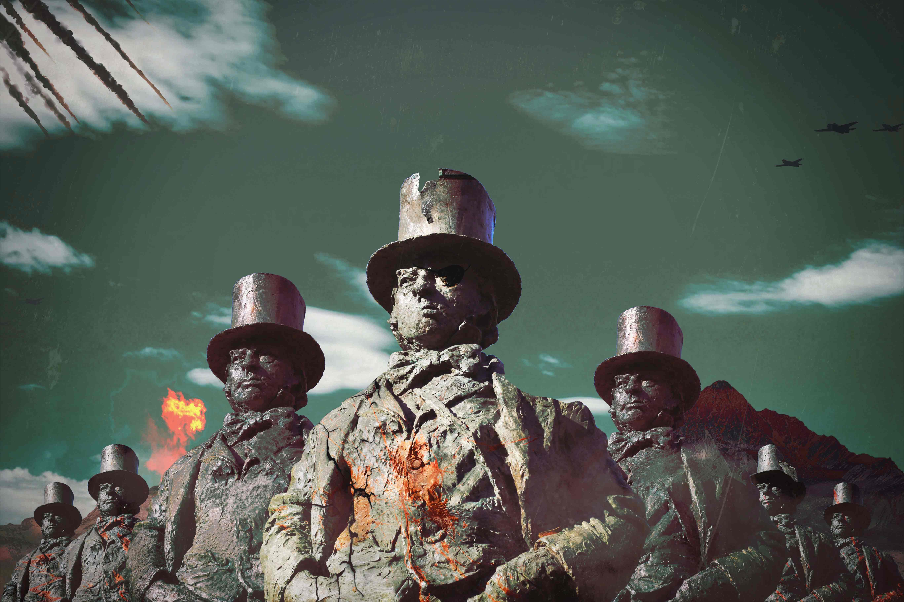
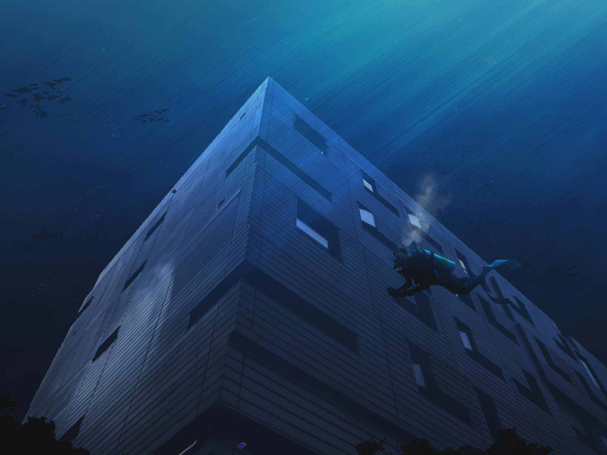

 


As part of our Digital Photography Assignment we needed to choose a photography topic and take different pictures. One of my chosen ones was Surrealism as I have had the chance of exploring this topic in the past. I decided to choose Brunel University as the core of the project since it was a real challenge. The goal was to cause the "wow" effect on the viewer. Thus, I selected the key parts of the university and put them into different Surrealist and magic scenarios.